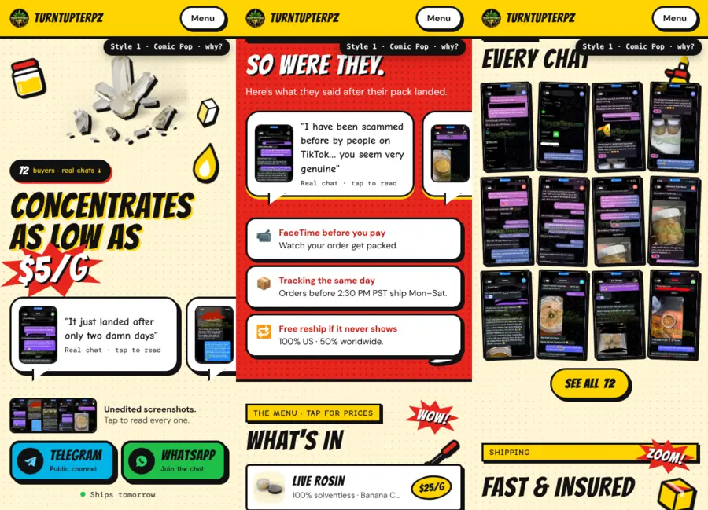
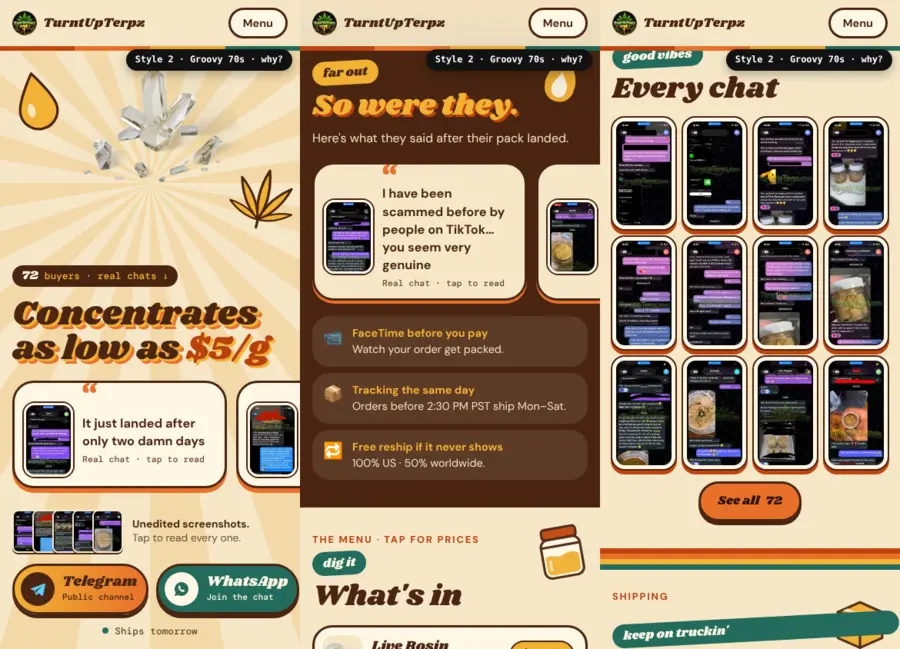
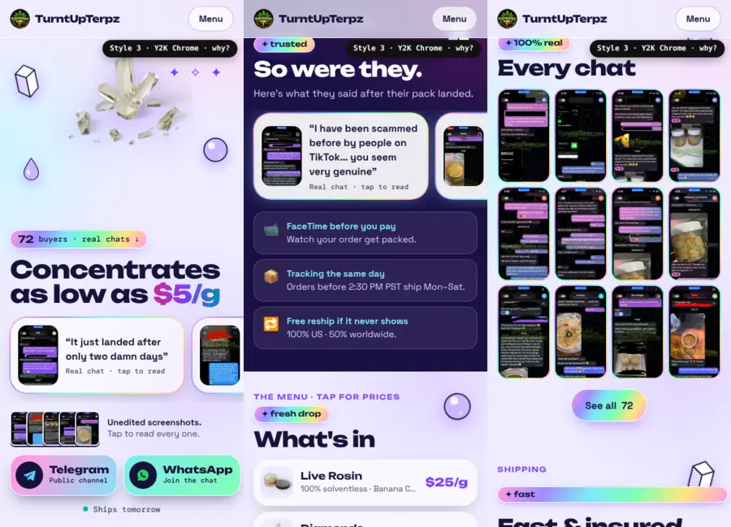
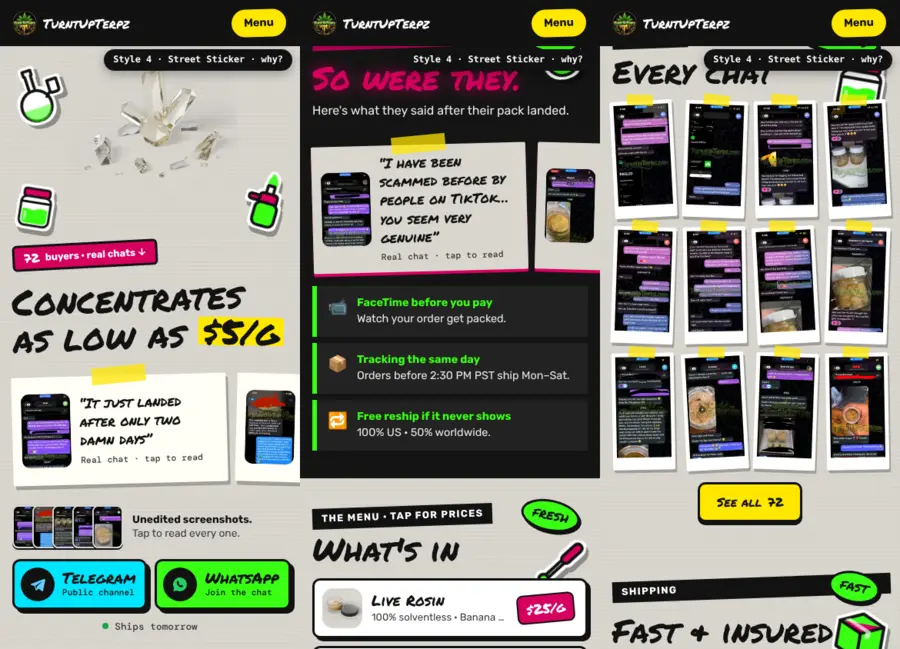
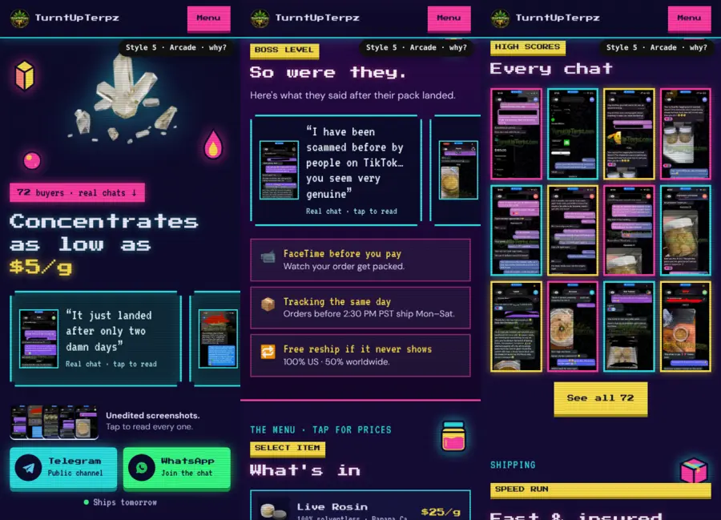
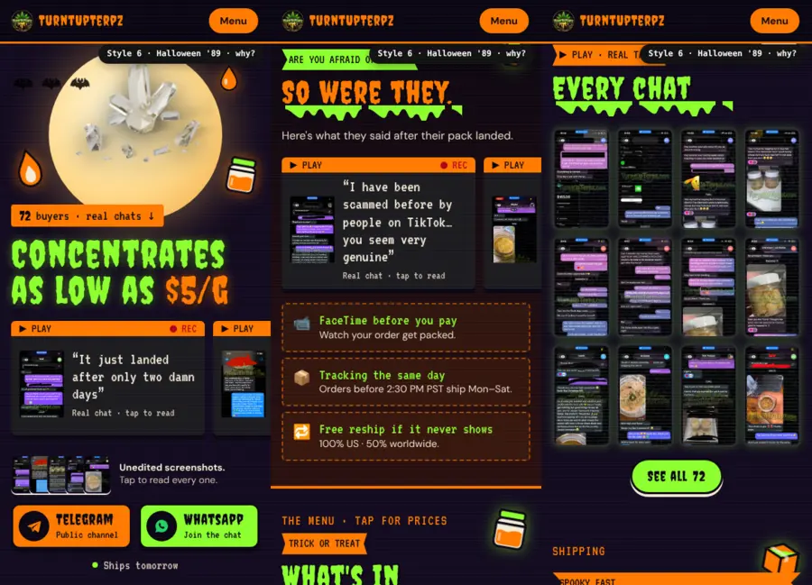

Six looks for the homepage
Same words, vouches, menu and buttons as the live site. Each one changes the colors, fonts, graphics and how every section is dressed, so the vouches, the "Been burned before?" section and the menu each stand out. Previews show the first screen, the scam section and the vouch grid.
The styles

- Fonts: Bangers headlines, Comic Neue quotes
- Vouches: speech bubbles with tails; screenshot grid as tilted comic panels
- Sections: yellow caption boxes and BAM! / WOW! / POW! / ZOOM! bursts; "Been burned" is a red halftone action panel
- Menu: comic panels with price bursts

- Fonts: chunky Shrikhand script with a stacked retro shadow
- Vouches: rounded cards with big quote marks; grid as 70s photo prints
- Sections: sunburst hero, rainbow stripes between sections, "far out / dig it / good vibes" tags
- Menu: mustard price tags

- Fonts: Unbounded (wide, chunky) + Space Grotesk
- Vouches: glass cards with a holographic ring; grid framed in holo
- Sections: iridescent background, holo "✦ 100% real" tags, a deep-space "Been burned" panel
- Menu: frosted glass rows, purple prices

- Fonts: Permanent Marker + Rubik
- Vouches: notes taped to a wall; grid as taped-up polaroids
- Sections: black tape labels, neon "LEGIT / REAL ONES" stickers, a spray-paint "Been burned" wall
- Menu: sticker labels with pink price tags

- Fonts: Press Start 2P pixel headlines, VT323 quotes
- Vouches: glowing CRT screens; grid as neon "high score" screens
- Sections: scanlines, hopping pixel stickers, "BOSS LEVEL / HIGH SCORES / SPEED RUN" tags
- Menu: "select item" rows that glow when opened

- References: Goosebumps covers (dripping slime-green title type, purple night), Beistle die-cut decorations (orange/black cutouts), VHS horror rentals (tracking lines, ▶ PLAY / ● REC labels), and "Are You Afraid of the Dark?"
- Fonts: Creepster headlines, VT323 VHS text
- Vouches: VHS tapes with orange labels; grid as TVs with tracking noise
- Sections: slime drips under every title, a full moon with bats in the hero, "ARE YOU AFRAID OF SCAMS?" on the scam section
- Menu: trick-or-treat rows with candy-corn price tags
Why these grab attention
Each section looks different from the one before it. People notice and remember the thing that breaks a pattern (the isolation effect). So the vouches, the scam section and the menu each get their own treatment (bubbles, a colored panel, price tags) instead of matching cards.
The order buttons stay the boldest thing on every screen, and all text passes the WCAG contrast check, so the style never costs readability.
Honest note: there's no study showing "comic" or "arcade" sells more. Style is about fitting your audience and standing out. Pick the one that feels most like your brand, then check Telegram + WhatsApp taps in Google Analytics over 2 weeks.
Double-checked
All 6 load with no errors and no sideways scrolling on an iPhone-sized screen. Every sticker and badge shows up. Every visible text passes WCAG 2 contrast (4.5:1 normal, 3:1 large). Comic's white "$5/g" on the red burst was checked by hand: 4.4:1, which passes for large text.
Sources
- Laws of UX, Von Restorff (isolation) effect.
- W3C, WCAG 2.1 Contrast (Minimum).
- Nielsen Norman Group, "Low-Contrast Text Is Not the Answer".